CRVI000547Oliver Munday - Who Killed America's Newspapers?
The Atlantic, November 2021 · 2021
The Atlantic, November 2021 · 2021

CRVI000475Justin Metz - The Atlantic, October 2024
The Atlantic October · 2024
The Atlantic October · 2024
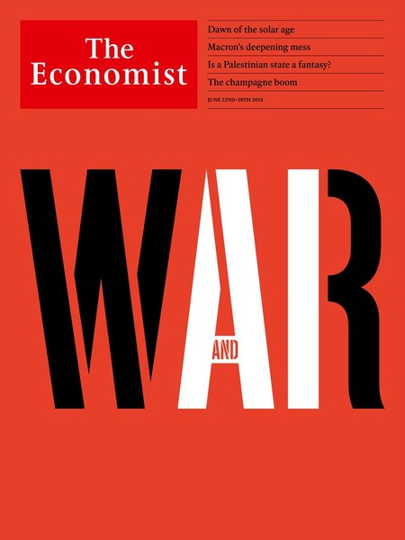
CRVI000482Graeme James - War and AI
The Economist, June 22-28, 2024 · 2024
The Economist, June 22-28, 2024 · 2024
CRVI000534D.W. Pine - Delete 'Facebook'?
TIME, October 25-November 1, 2021 · 2021
TIME, October 25-November 1, 2021 · 2021

CRVI000550D.W. Pine - Day One.
TIME, February 1-8, 2021 · 2021
TIME, February 1-8, 2021 · 2021

CRVI000713Helado Negro - The Last Sound On Earth
Designed by Robert Beatty · 2025
Designed by Robert Beatty · 2025

CRVI000546Emily Kimbro - The 50 Best BBQ Joints
Texas Monthly, November 2021 · 2021
Texas Monthly, November 2021 · 2021
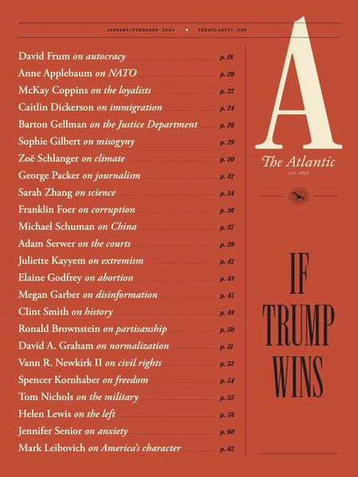
CRVI000491Matt Huynh - If Trump Wins
The Atlantic, January/February 2024 · 2024
The Atlantic, January/February 2024 · 2024

CRVI000512D.W. Pine - Unprecedented.
TIME, April 24/May 1, 2023 · 2023
TIME, April 24/May 1, 2023 · 2023

CRVI000715Hunx And His Punx - Walk Out On This World
Designed by Robert Beatty · 2025
Designed by Robert Beatty · 2025

CRVI000479Martin Schoeller - The Health Issue
New York, July 15-28, 2024 · 2024
New York, July 15-28, 2024 · 2024

CRVI000545James Van Fleteren - Build a Better Breakfast Sandwich
EatingWell, May 2021 · 2021
EatingWell, May 2021 · 2021

CRVI000554Thomas Alberty - She Has Her Mother's Eyes. And Agent.
New York, December 19, 2022 · 2022
New York, December 19, 2022 · 2022

CRVI000488Stella Ragas - The Takeover
New York, May 6-19, 2024 · 2024
New York, May 6-19, 2024 · 2024

CRVI000563Kadir Nelson - High Style
The New Yorker, February 14 and 21, 2022 · 2022
The New Yorker, February 14 and 21, 2022 · 2022

CRVI000516Unknown - Erykah the Almighty
The Cut, September 11-24, 2023 · 2023
The Cut, September 11-24, 2023 · 2023

CRVI000213Unknown - Stare
Reaction GIF · Walton Goggins as Rick Hatchett, The White Lotus · 72 frames, 3.6s loop · 2025
Reaction GIF · Walton Goggins as Rick Hatchett, The White Lotus · 72 frames, 3.6s loop · 2025

CRVI000569Anita Kunz - No Photos, Please!
The New Yorker, August 29, 2022 · 2022
The New Yorker, August 29, 2022 · 2022

CRVI000565Thomas Alberty - Reasons to Love New York
New York, December 5-18, 2022 · 2022
New York, December 5-18, 2022 · 2022

CRVI000570Gail Bichler - Boxed In
The New York Times Magazine, December 4, 2022 · 2022
The New York Times Magazine, December 4, 2022 · 2022

CRVI000524Cian Browne - Taylor Russell
W, January 2023 · 2023
W, January 2023 · 2023

CRVI000493Bill Mayer - When Pets Escape: The Great Goldfish Invasion
The New York Times for Kids, January 28, 2024 · 2024
The New York Times for Kids, January 28, 2024 · 2024

CRVI000214Unknown - Victoria
Reaction GIF · Parker Posey as Victoria Ratliff, The White Lotus · 117 frames, 3.9s loop · 2025
Reaction GIF · Parker Posey as Victoria Ratliff, The White Lotus · 117 frames, 3.9s loop · 2025

CRVI000211Unknown - Nonverbal Yes
Reaction GIF · Leslie Bibb as Kate, The White Lotus · 39 frames, 3.9s loop · 2025
Reaction GIF · Leslie Bibb as Kate, The White Lotus · 39 frames, 3.9s loop · 2025

CRVI000499Leo Jung - The Longest Walk to America
The California Sunday Magazine, April 2020 · 2020
The California Sunday Magazine, April 2020 · 2020

CRVI000564Thandiwe Muriu - Global Cool
Virtuoso, September/October 2022 · 2022
Virtuoso, September/October 2022 · 2022

CRVI000716Thee Oh Sees - Joe Westerland
Designed by Robert Beatty · 2025
Designed by Robert Beatty · 2025

CRVI000518Gail Bichler - What Was Twitter, Anyway?
The New York Times Magazine, April 23, 2023 · 2023
The New York Times Magazine, April 23, 2023 · 2023

CRVI000522Gian Gisiger - AȘAP Rocky
Highsnobiety · 2023
Highsnobiety · 2023

CRVI000542Nathalie Kirsheh - The Best of Global Beauty
Allure, May 2021 · 2021
Allure, May 2021 · 2021

CRVI000528Gail Bichler - Should You Be in Therapy?
The New York Times Magazine, May 21, 2023 · 2023
The New York Times Magazine, May 21, 2023 · 2023

CRVI000503Unknown - The Year of the Taco
Texas Monthly, November 2020 · 2020
Texas Monthly, November 2020 · 2020

CRVI000551Thomas Alberty - The Pleasures of Outdoor Dining
New York, October 24- November 6, 2022 · 2022
New York, October 24- November 6, 2022 · 2022

CRVI000507Oliver Shaw - The Stupid Issue
VICE, March 2020 · 2020
VICE, March 2020 · 2020

CRVI000568Gail Bichler - The New York Issue
The New York Times Magazine, June 5, 2022 · 2022
The New York Times Magazine, June 5, 2022 · 2022

CRVI000500Adrian Tomine - Love Life
The New Yorker, December 7, 2020 · 2020
The New Yorker, December 7, 2020 · 2020

CRVI000494Armando Veve - Sting Theory
The New York Times Magazine, November 17, 2024 · 2024
The New York Times Magazine, November 17, 2024 · 2024

CRVI000514Chris Nosenzo - Will It Ever End?
Bloomberg Businessweek, February 20, 2023 · 2023
Bloomberg Businessweek, February 20, 2023 · 2023

CRVI000548Nia Lawrence - Rihanna + Lorna Simpson
ESSENCE, January/February 2021 · 2021
ESSENCE, January/February 2021 · 2021

CRVI000714Robert Beatty - 3 Day Gallon
Ahem Editions print · 2026
Ahem Editions print · 2026

CRVI000530Tom Alberty - Worth Less
New York, July 17-30, 2023 · 2023
New York, July 17-30, 2023 · 2023

CRVI000541Agnethe Glatved - Current Mood: Resilient
Parents, March 2021 · 2021
Parents, March 2021 · 2021

CRVI000544Unknown - Composed
The New Yorker, September 27, 2021 · 2021
The New Yorker, September 27, 2021 · 2021
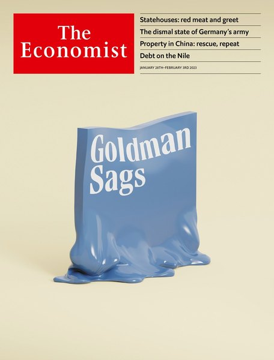
CRVI000520Matt Withers - Goldman Sags
The Economist, January 28-February 3, 2023 · 2023
The Economist, January 28-February 3, 2023 · 2023

CRVI000543Bobby Doherty - New Yawk Style
New York, March 1-14, 2021 · 2021
New York, March 1-14, 2021 · 2021
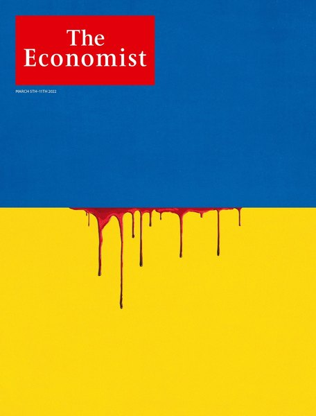
CRVI000553Graeme James - The Horror Ahead
The Economist, March 5-11, 2022 · 2022
The Economist, March 5-11, 2022 · 2022

CRVI000718Oneohtrix Point Never - Magic Oneohtrix Point Never
Insert panel A · designed by Robert Beatty · Warp Records · 2020
Insert panel A · designed by Robert Beatty · Warp Records · 2020
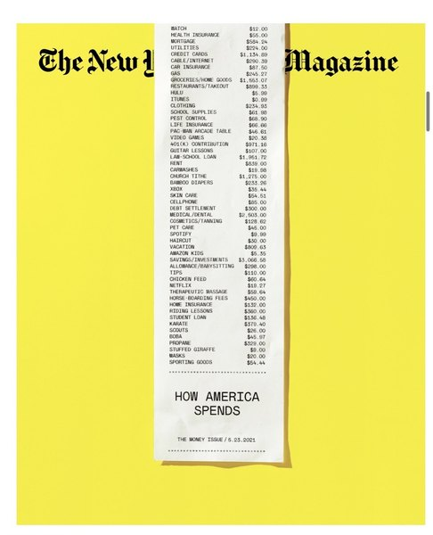
CRVI000537Gail Bichler - How America Spends
The New York Times Magazine, May 23, 2021 · 2021
The New York Times Magazine, May 23, 2021 · 2021
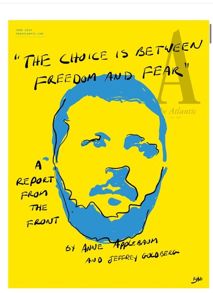
CRVI000513Oliver Munday - The Choice Is Between Freedom and Fear
The Atlantic, June 2023 · 2023
The Atlantic, June 2023 · 2023
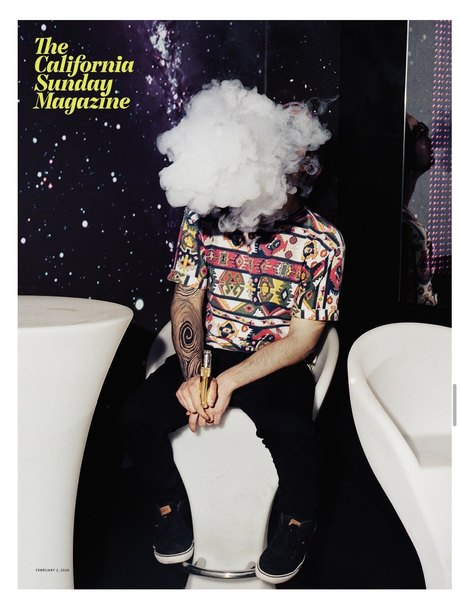
CRVI000501Leo Jung - The Lucrative, Largely Unregulated, and Widely Misunderstood World of Vaping
The California Sunday Magazine, February 2, 2020 · 2020
The California Sunday Magazine, February 2, 2020 · 2020
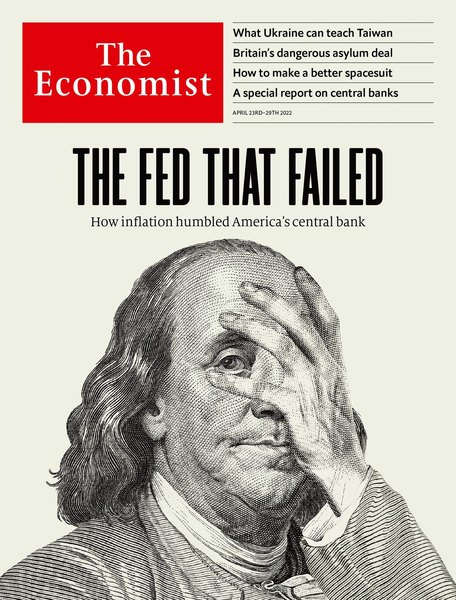
CRVI000558Ricardo Rey - The Fed That Failed
The Economist, April 23-29, 2022 · 2022
The Economist, April 23-29, 2022 · 2022

CRVI000484Anna Devís - The Hotel Issue
VIRTUOSO, July/August 2024 · 2024
VIRTUOSO, July/August 2024 · 2024

CRVI000549Gail Bichler - The Passion of Questlove
The New York Times Magazine, October 17, 2021 · 2021
The New York Times Magazine, October 17, 2021 · 2021

CRVI000555Gail Bichler - Great Performers: Featuring Michelle Yeoh
The New York Times Magazine, December 11, 2022 · 2022
The New York Times Magazine, December 11, 2022 · 2022

CRVI000717Oneohtrix Point Never - Magic Oneohtrix Point Never
Back cover · designed by Robert Beatty · Warp Records · 2020
Back cover · designed by Robert Beatty · Warp Records · 2020

CRVI000719Oneohtrix Point Never - Magic Oneohtrix Point Never
Insert panel B · designed by Robert Beatty · Warp Records · 2020
Insert panel B · designed by Robert Beatty · Warp Records · 2020

CRVI000526Cindy Wehling - Reemergence
High Country News, May 2023 · 2023
High Country News, May 2023 · 2023

CRVI000509Unknown - Anthony Fauci
Bloomberg Businessweek, 7 December 2020 · opening spread · 2020
Bloomberg Businessweek, 7 December 2020 · opening spread · 2020

CRVI000496Chris Nosenzo - Is Google Hurting Small Business?
Bloomberg Businessweek, August 10, 2020 · 2020
Bloomberg Businessweek, August 10, 2020 · 2020

CRVI000557Somnath Bhatt - The Baristas' Rebellion
Bloomberg Businessweek, May 16, 2022 · 2022
Bloomberg Businessweek, May 16, 2022 · 2022
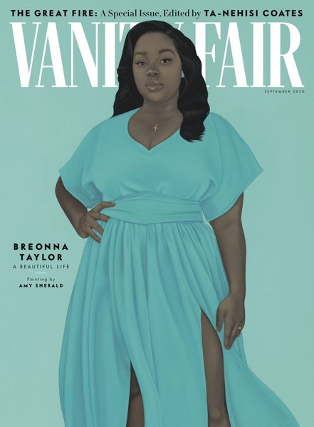
CRVI000506Justin Patrick Long - The Great Fire
Vanity Fair, September 2020 · 2020
Vanity Fair, September 2020 · 2020

CRVI000539Peter Herbert - Fortune 500
Fortune, June/July 2021 · 2021
Fortune, June/July 2021 · 2021

CRVI000562Cian Browne - Zendaya
W · 2022
W · 2022
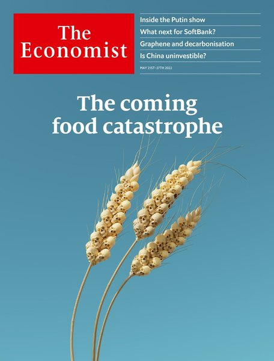
CRVI000566Graeme James - The Coming Food Catastrophe
The Economist, May 21-27, 2022 · 2022
The Economist, May 21-27, 2022 · 2022

CRVI000531Unknown - The Lunacy of Text-Based Therapy
New York, March 29-April 11, 2021 · 2021
New York, March 29-April 11, 2021 · 2021
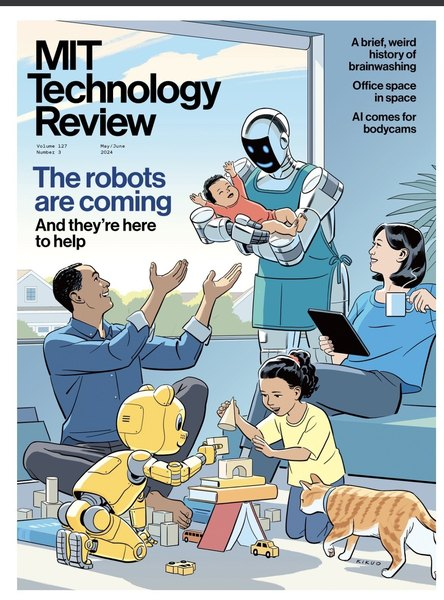
CRVI000489R. Kikuo Johnson - The Robots Are Coming
MIT Technology Review, May/June 2024 · 2024
MIT Technology Review, May/June 2024 · 2024
CRVI000515Gian Gisiger - NewJeans
Highsnobiety · 2023
Highsnobiety · 2023
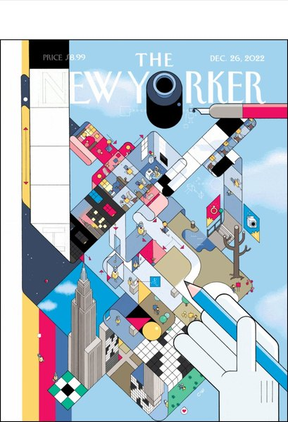
CRVI000571Chris Ware - Ups and Downs
The New Yorker, December 26, 2022 · 2022
The New Yorker, December 26, 2022 · 2022
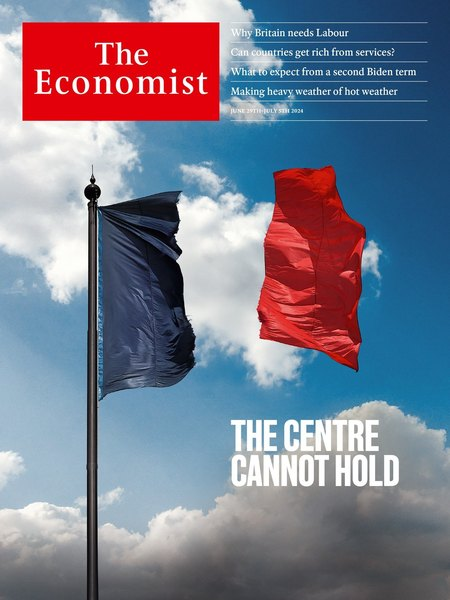
CRVI000477Justin Metz - The Centre Cannot Hold
The Economist, June 29-July 5, 2024 · 2024
The Economist, June 29-July 5, 2024 · 2024

CRVI000508Raul Aguila - Wild About Harry
Variety, December 2, 2020 · 2020
Variety, December 2, 2020 · 2020
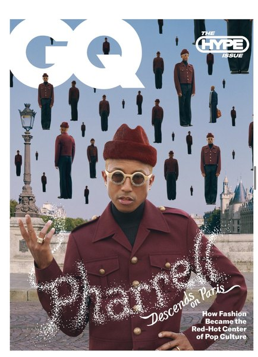
CRVI000521Robert Vargas - Pharrell Descends on Paris
GQ, September 2023 · 2023
GQ, September 2023 · 2023
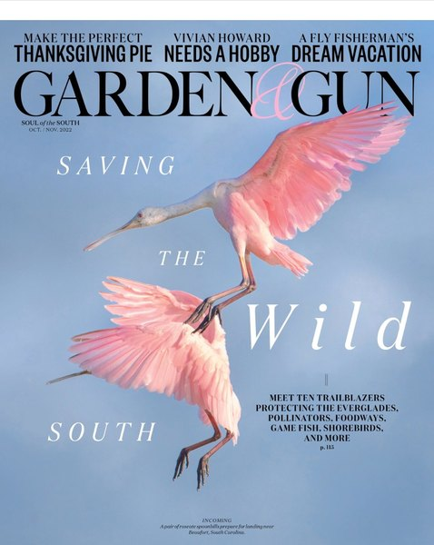
CRVI000561Marshall Mckinney - Saving the Wild South
Garden & Gun, October/November 2022 · 2022
Garden & Gun, October/November 2022 · 2022

CRVI000478Tim O'Brien - American Oligarchy
Mother Jones, January + February 2024 · 2024
Mother Jones, January + February 2024 · 2024

CRVI000560Lisa Sheehan - Blood Sport
Mother Jones, November + December 2022 · 2022
Mother Jones, November + December 2022 · 2022
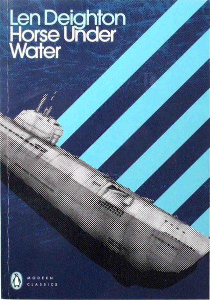
CRVI000243Jim Stoddart - Horse Under Water
Cover for Len Deighton · Penguin · 2021
Cover for Len Deighton · Penguin · 2021
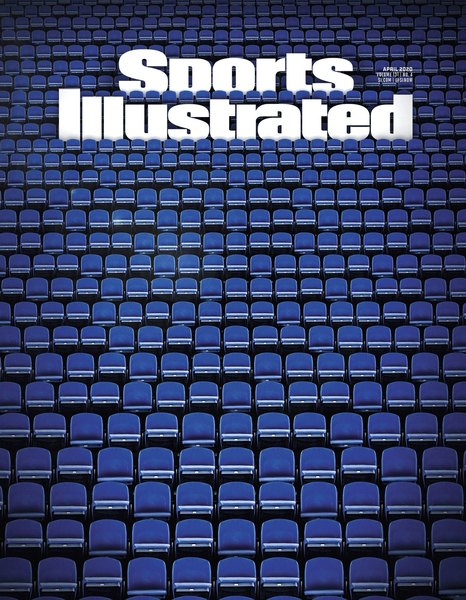
CRVI000504Stephen Skalocky - Empty Arena
Sports Illustrated, April 2020 · 2020
Sports Illustrated, April 2020 · 2020

CRVI000492Joe Darrow - Sign Here, My Stallion
New York, July 1-14, 2024 · 2024
New York, July 1-14, 2024 · 2024

CRVI000529Robert Vargas - André 3000 Is Back!
GQ, November 2023 · 2023
GQ, November 2023 · 2023

CRVI000483Bobby Doherty - Why Pants Are Blowing Up
The New York Times Magazine, March 3, 2024 · 2024
The New York Times Magazine, March 3, 2024 · 2024

CRVI000497Maili Holiman - TikTok's Evolution of Digital Blackface
WIRED, September 2020 · 2020
WIRED, September 2020 · 2020

CRVI000556Gail Bichler - The Future of Work When No One Wants to Work
The New York Times Magazine, February 20, 2022 · 2022
The New York Times Magazine, February 20, 2022 · 2022

CRVI000221Yayoi Kusama - A Bouquet of Love I saw in the Universe
Photograph by Andreas Meichsner · Martin-Gropius-Bau, Berlin · 2021
Photograph by Andreas Meichsner · Martin-Gropius-Bau, Berlin · 2021

CRVI000495Justin Patrick Long - Pattern Player
Vanity Fair, October 2020 · 2020
Vanity Fair, October 2020 · 2020
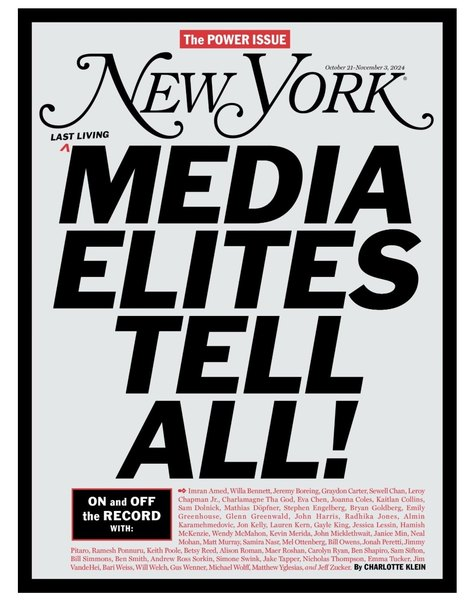
CRVI000481Unknown - The Power Issue
New York, October 21-November 3, 2024 · 2024
New York, October 21-November 3, 2024 · 2024

CRVI000533Gail Bichler - The American Abyss
The New York Times Magazine, January 17, 2021 · 2021
The New York Times Magazine, January 17, 2021 · 2021

CRVI000517Peter B. Cury - Adele!
The Hollywood Reporter, December 7, 2023 · 2023
The Hollywood Reporter, December 7, 2023 · 2023
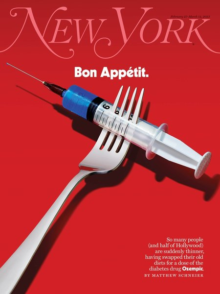
CRVI000525Tom Alberty - Bon Appétit
New York, February 27-March 12, 2023 · 2023
New York, February 27-March 12, 2023 · 2023

CRVI000538Chris Nosenzo - How to Lose $20 Billion* in 2 Days
Bloomberg Businessweek, April 12, 2021 · 2021
Bloomberg Businessweek, April 12, 2021 · 2021
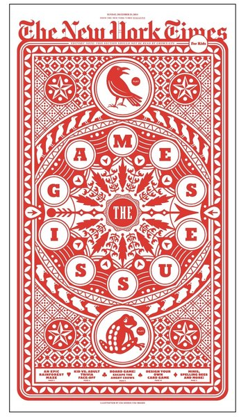
CRVI000487CSA Design/CSA Images - The Games Issue
The New York Times for Kids, December 29, 2024 · 2024
The New York Times for Kids, December 29, 2024 · 2024
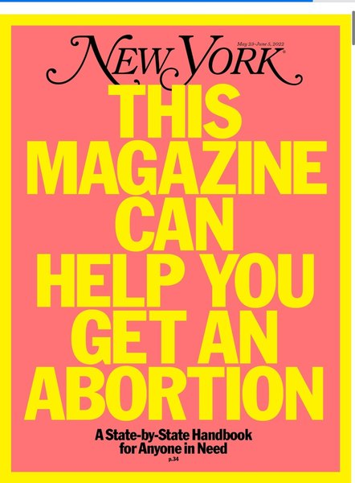
CRVI000552Thomas Alberty - This Magazine Can Help You Get an Abortion
New York, May 23-June 5, 2022 · 2022
New York, May 23-June 5, 2022 · 2022

CRVI000683C.A. Wisely - Groundhog Day
Hand-painted Ghanaian film poster · 2021
Hand-painted Ghanaian film poster · 2021
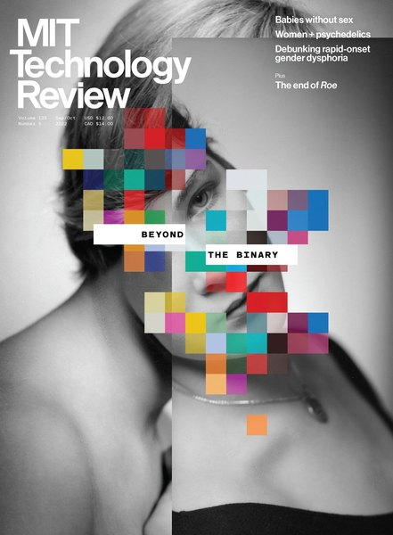
CRVI000567Kenneth Kajoranta - Beyond the Binary
MIT Technology Review, September/October 2022 · 2022
MIT Technology Review, September/October 2022 · 2022

CRVI000455Jim Stoddart - Billion Dollar Brain
Cover for Len Deighton · Penguin · 2021
Cover for Len Deighton · Penguin · 2021

CRVI000485Javier Jaen - Gen Z: Reasons to Be Cheerful
The Economist, April 20-26, 2024 · 2024
The Economist, April 20-26, 2024 · 2024
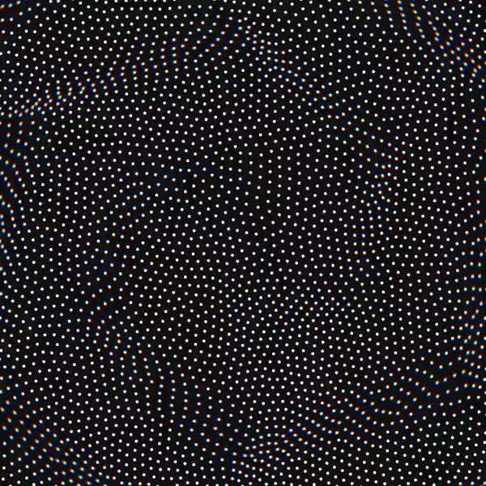
CRVI000404Dave Whyte - Untitled
Animation posted without a title · 750px · 140 frames, 2.8s loop · 2020
Animation posted without a title · 750px · 140 frames, 2.8s loop · 2020
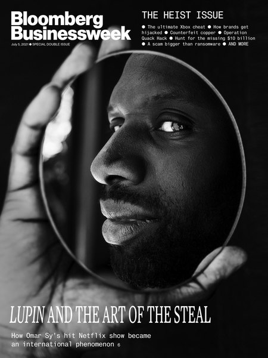
CRVI000535Chris Nosenzo - Lupin and the Art of the Steal
Bloomberg Businessweek, July 5, 2021 · 2021
Bloomberg Businessweek, July 5, 2021 · 2021
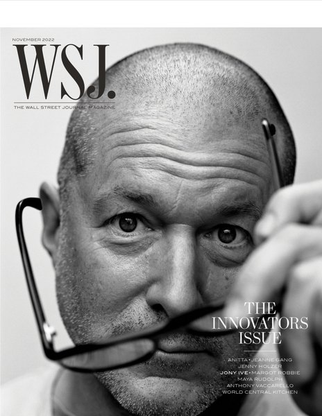
CRVI000559Tanya Moskowitz - The Innovators Issue
WSJ. Magazine, November 2022 · 2022
WSJ. Magazine, November 2022 · 2022
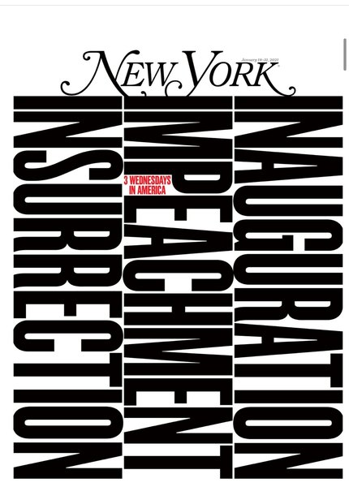
CRVI000532Thomas Alberty - 3 Wednesdays in America
New York, January 18-31, 2021 · 2021
New York, January 18-31, 2021 · 2021
CRVI000536Gail Bichler - The Age of Ishiguro
The New York Times Magazine, February 28, 2021 · 2021
The New York Times Magazine, February 28, 2021 · 2021

CRVI000486Philip Montgomery - The Olympics Issue
The New York Times Magazine, July 28, 2024 · 2024
The New York Times Magazine, July 28, 2024 · 2024

CRVI000480Alex Merto - The Retirement Issue
The New York Times Magazine, May 12, 2024 · 2024
The New York Times Magazine, May 12, 2024 · 2024

CRVI000720Oneohtrix Point Never - Magic Oneohtrix Point Never
Insert panel C · designed by Robert Beatty · Warp Records · 2020
Insert panel C · designed by Robert Beatty · Warp Records · 2020

CRVI000540QuickHoney - Can I SPAC My Stonks With NFTs?
New York, April 12- 25, 2021 · 2021
New York, April 12- 25, 2021 · 2021
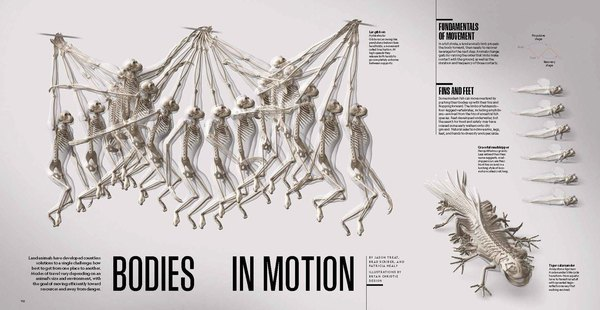
CRVI000498Unknown - Bodies in Motion
National Geographic, May 2020 · 2020
National Geographic, May 2020 · 2020

CRVI000476Mark Harris - Whitewash
The New York Times Magazine, March 17, 2024 · 2024
The New York Times Magazine, March 17, 2024 · 2024
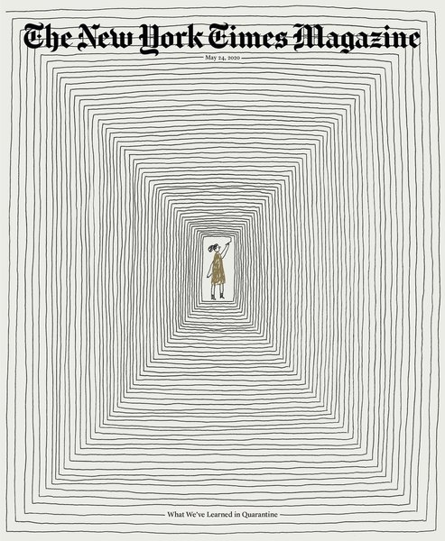
CRVI000505Gail Bichler - What We've Learned in Quarantine
The New York Times Magazine, May 24, 2020 · 2020
The New York Times Magazine, May 24, 2020 · 2020

CRVI000502Peter Herbert - The World at a Crossroads
Fortune, August/September 2020 · 2020
Fortune, August/September 2020 · 2020

CRVI000490Unknown - The Psychic Toll of a Dead-Even Race
New York, November 4-17, 2024 · 2024
New York, November 4-17, 2024 · 2024

CRVI000527Haley Kluge - No Words. What the Writers Strike Means for Hollywood
Variety, May 3, 2023 · 2023
Variety, May 3, 2023 · 2023